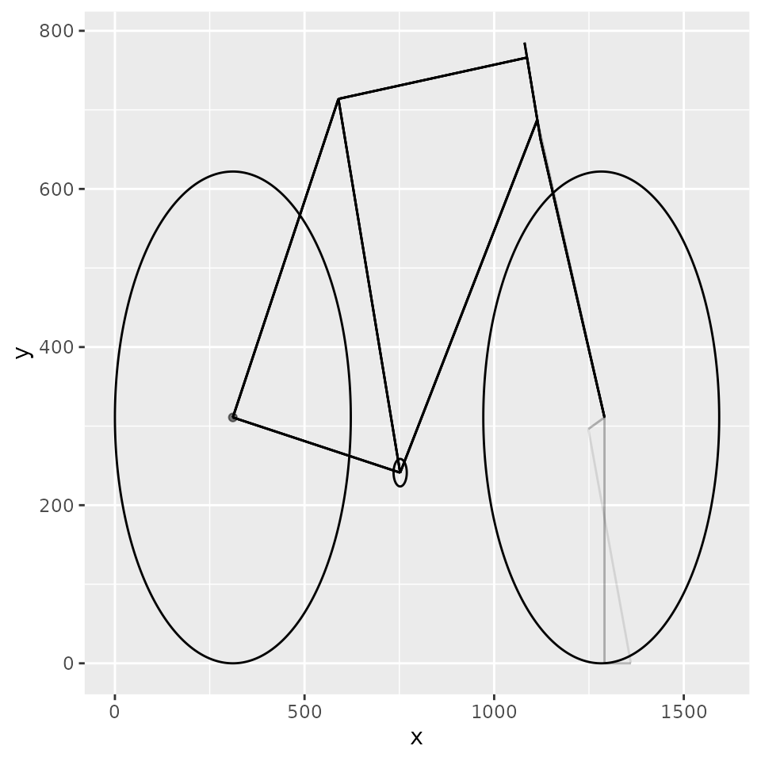

bicycle.Rmd
library(magrittr)
library(tidyr)
#>
#> Attaching package: 'tidyr'
#> The following object is masked from 'package:magrittr':
#>
#> extract
library(bicycle)
library(ggplot2)This is an attempt to code up Chapter 4 of Lugged Bicycle Frame Construction, 3rd Ed. by Marc-Andre R. Chimonas.
Abbreviations:
Frame Angles:
Other measurements:
A bike frame has to have a certain shape, so some of the measurements are going to depend on others. So designing a frame can be thought of as a function that accepts certain inputs and returns some outputs, with some constraints that must be met for the inputs to be valid.
Inputs:
Outputs:
This main function will be a wrapper around a bunch of smaller convenience functions that will do some trigonometric calculations.
Let’s sketch out a slant-six frame. This is a design where the top tube has a 6-degree slope. We’re making this choice explicit by setting tt_angle = 6. Other than that, we’re leaving most arguments of wrap_frame_dims() at their default values:
df_slantsix <- wrap_frame_dims(tt_angle = 6,
st_dt_angle = 58,
cs_st_angle = 62)
#> Joining, by = "st_triangle"What did we just get?
| st_triangle | dt_triangle | ht_triangle | tt_triangle | ett_triangle | cs_triangle | ss_triangle |
|---|---|---|---|---|---|---|
| 500 | 574 | 83 | 500 | 55 | 447 | 490 |
| 473 | 446 | 79 | 52 | 52 | 70 | 403 |
| 163 | 362 | 27 | 497 | 18 | 441 | 278 |
A bicycle frame is made up of nine tubes: one each of ST, TT, DT, HT, two CS’s, two ST’s, and one BB shell. The df_slantsix describes all but the BB shell as right triangles. In the case of the first four, the length of the tube is the hypotenuse and the legs are the horizontal and vertical projections with reference to the ground, as the bicycle stands on it.
The CS and SS tubes are special, because they to not lie onto the bicycle plane. Instead, they stick out from it at an angle. The seat stays meet at the top of the seat tube and spread out at the dropouts to accommodate the rear wheel hub; the chain stays start at the bottom bracket shell close together and then spread out to meet the seat stay ends in the rear wheel dropouts. So the CS and SS lengths given in the df_slantsix are not the actual lengths of the tubes, but the lengths of their projections onto the bicycle plane. That is why you see 447 mm on the first row of the cs_triangle column when wrap_frame_dims(), as called above, specified a chain stay of 450 mm.
The BB shell is omitted because its dimensions are standard, and in the case of a lugged frame construction it comes pre-cast. You just buy it. The most common BB shells for road bikes are 68 mm wide and have an internal diameter of about 34 mm. I say “about” because they are threaded, so this diameter varies between its widest at the bottom of the thread and its narrowest at the top of the thread. Wheels Manufacturing shows a complete table here.
Lugged BB shells come with 3 angles specified:
There’s also a distance specified that might as well be called bottom bracket shell center offset. It is marked 15.5 in this drawing. It’s the distance between the center line of the bottom bracket shell and the center line of the chain stay, measured along the axis of the bottom bracket shell. It will feature in our functions as the argument bbsc_offset. This distance is important, because you have some wiggle room on setting it. The BB shell width is given, but inside that width you can stick in the chain stays at varying degrees and spaced apart by varying lengths of bbsc_offset times two.
Longer chain stays make for a more comfortable ride; shorter ones make for better power transmission. Whatever the length, you aim for a given OLD rear dropout spacing. OLD is short for over-locknut-dimension and it’s how wide apart the ends of the chain stays must be for the rear wheel to fit into the dropouts precisely. It is not visible in the drawing plane, because it is perpendicular to it. But the length of the CS projection onto the frame plane depends on it. OLD, like BB shell width, is standardized: it’s 130 mm for a modern road frame, 135 mm for an old-school mountain bike, and it can be narrower or wider for different kinds of bikes, some older, some newer. Because steel has some flex, there is also an intermediate 132.5 mm OLD. This is the “gnot rite” spacing on the Surly Cross Check frame, and it’s supposed to work for either jamming a 135 mm hub in there or for pinching the chain stays around a 130 mm one. This is feasible because 2.5 mm difference works out to 1.25 mm on each side and that is acceptable, but in general the distance between the dropouts should be close to the OLD so that the dropouts are parallel when squeezed onto the hub locknuts. If they are not, they will tend to bend the axle and put shearing strain onto sealed bearing hubs.
So when you design a frame the chain stay length is an input, but it cannot be entirely arbitrary, because it’s the slant side of a trapezoid whose other three sides are half of the OLD, the rear wheel radius plus some clearance, and the bbsc_offset. The first is given; the second must clear the wheel radius, which is given; and third must fit within the BB shell width, also given. You’ll want to check it for meeting these constraints when you set it, and you might as well write some functions for that. In this package they are defined in R/old_helpers.R.
Think of the chain stay as anchored at the dropout, which hags in the air at the center of the rear wheel. It is not parallel to the ground. It meets the bottom bracket at some point below the dropout. The difference in height between the dropout and the bottom bracket is called BB drop. The lower, the more comfortable the ride, but it cannot be too low because then you may strike the ground with the pedal when you lean into a turn. The height of the dropout is made up by the sum of the BB drop and the BB height. You can determine the BB drop from the CS length using the get_bb_drop() function. This will be useful to know when you’re designing a frame for a given wheel size. Exotic (read, stupid) designs with very small wheels may even have a negative BB drop.
The rear dropout is a good way to anchor the frame drawing on paper. If we compare two frames drawn on the same plot, to check differences in BB drop, trail, wheel base, etc. they will all be immediately obvious. The trail segments will be drawn along the same horizontal like if the two frames have identical wheel diameters. If the two frames have different wheel diameters, anchoring at the the x coordinate of the rear DO and the y coordinate of the frame’s wheel diameter / 2 produces a clean vertical shift between the two frames and the differences in the horizontal dimensions are equally easy to see because they all begin at the same offset. Finally, you can see immediately when you look at the plot that the ground is at the x axis, a natural place for it.
Here’s an example:
df_slantsix %>%
draw_the_bicycle() %>%
add_the_ett_to_the_drawing(df_slantsix)Each of the 6 tubes shown above could have been drawn as a right triangle with the length (shown on the first row of df_slantsix) as the hypotenuse and its vertical and horizontal projections (shown on the second and third rows respectively) as the legs, but that would have made for unnecessary clutter. The elements of each column in df_slantsix are named because the plotting functions rely on the names for drawing things correctly. You can use the names to recover any of these dimensions for any reason.
The triangle at the top of the top tube, described by the faint horizontal line and the faint extension to the seat tube, is there to help visualize the effective top tube length. In a classic frame, where the top tube is perfectly horizontal, the actual length is the same as the effective length. Sizing such a frame is a simple matter of making sure that you can straddle the top tube without hitting it with your feet on the ground, and that you get adequate reach while riding seated – your elbows are slightly bent, and you are not forcing your hands to carry too much of your body weight. Reach is well approximated by the actual length of the top tube.
With slant top tubes reach is better gauged by the effective length, not the actual length. The ability to plot it as a faint horizontal line should be useful for comparing the expected frame fit between frames with different top tube angles.
Given a wheel diameter, the rear DO will sit in space at half that height, and the front DO will have to sit at the same height if the wheels are the same size. So think of the CS as pivoting from the rear DO. Where does the BB end up, and what happens to the DT? The sharper the CS to DT angle is, the deeper the BB drop. This angle is split between the CS to ST angle and the ST to DT angle. Other things equal, the steeper the ST, the slacker the DT angle,and the the longer the HT. That HT length can only extend down toward the wheel because the top of the HT is fixed by the TT length and angle. As the HT grows longer, the room for a fork that is long enough to clear the front wheel decreases. So the total CS-DT angle can only grow so much before you run out of room for the front wheel, or else you have to give the fork a huge rake.
This matters because our bike frame schematic so far is missing a piece at the bottom of the HT. The fork crown cannot come up all the way to where the DT and the HT meet, so the HT has got to be longer than what’s been drawn so far. How much longer? That’s what we’ll calculate next. It must be long enough to accommodate the fork we pick, which will have a rake and a crown-to-axle length given. This crown-to-axle length needs to be larger than the wheel radius (with the inflated tire on) but it also has to be shorter than the adjusted fork length shown in the first row of the af_triangle column in the data frame drawn by wrap_frame_dims(). That length, in turn, will vary depending on your choices for the st_dt_angle and cs_st_angle arguments, for the reason detailed in the previous paragraph. So, when you pick a value for the fork_cta_length argument in the function find_ht_extension_and_add_true_fork(), you must make sure that it is lower than what you see in the first row of the af_triangle column that will be added to the data frame drawn by wrap_frame_dims() when you run add_steering_axis().
Here are the dimensions we need for drawing up the frame with the fork included:
df_slantsix <- df_slantsix %>%
find_ht_extension_and_add_true_fork()
#> Pythagoras! 1
#> h is af 1
df_slantsix %>% knitr::kable(digits = 0)| st_triangle | dt_triangle | ht_triangle | tt_triangle | ett_triangle | cs_triangle | ss_triangle | sa_triangle | af_triangle | sa_ext_triangle | rake_triangle | ht_ext_triangle | f_triangle |
|---|---|---|---|---|---|---|---|---|---|---|---|---|
| 500 | 574 | 83 | 500 | 55 | 447 | 490 | 398 | 416 | 15 | 45 | 26 | 390 |
| 473 | 446 | 79 | 52 | 52 | 70 | 403 | 377 | 377 | 15 | 15 | 25 | 352 |
| 163 | 362 | 27 | 497 | 18 | 441 | 278 | 130 | 177 | 5 | 43 | 9 | 169 |
Here’s what the frame looks like now:
df_slantsix %>%
draw_the_bicycle() %>%
add_the_fork_rake_to_the_drawing(df_slantsix) %>%
draw_the_true_fork(df_slantsix) %>%
add_the_wheels(df_slantsix) %>%
add_the_fork_trail(df_slantsix) %>%
print()
Recall that some of these frame measurements are inputs and others outputs. Because you build a frame under certain constraints, some dimensions are functions of others. You can input some and derive the others any way in theory, math will let you, but sometimes you’re constrained by the building technique. For example, lugs come at pre-set angles. You buy a given lugged BB shell, it will come with set CS-DT and ST-DT angles. Those will have to be inputs; there’s no other way.
When you’re not constrained in this fashion, you can use some of the functions in R/other_helpers.R for deriving what you don’t have from what you do, given known frame building constraints. This can be useful when you are trying to compare two frames built from published geometry tables where different vendors leave out different things.
From what we have so far, we can derive some common frame metrics, such as:
A wrapper that will return a tibble of frame dimensions, a named list of additional metrics of interest, and a picture would be nice, because it would allow tight control over the inputs, so we don’t run the risk that we enter one HT angle in one place, and another somewhere else. That is what big_bicycle() does.
goods <- big_bicycle()
#> Joining, by = "st_triangle"
#> Pythagoras! 1
#> h is af 1The original wide data frame may be unwieldy. Here’s a simple way to make it tidy, so you can then filter lengths easily. The names are lower-case versions of the abbreviations listed earlier. Two things to keep in mind:
_ext it means “extension” so for the true HT length in millimeters add ht with ht_ext
cs – the wider the angle, the greater the difference.
goods$data %>%
tibble::add_column(dim = names(.$st_triangle)) %>%
tidyr::pivot_longer(!dim) %>%
dplyr::arrange(name, dim) %>%
dplyr::filter(dim == 'length') %>%
dplyr::select(-dim) %>%
dplyr::mutate(name = name %>%
stringr::str_replace('_triangle', ''),
value = round(value))
#> # A tibble: 13 × 2
#> name value
#> <chr> <dbl>
#> 1 af 402
#> 2 cs 447
#> 3 dt 557
#> 4 ett 0
#> 5 f 390
#> 6 ht_ext 12
#> 7 ht 42
#> 8 rake 45
#> 9 sa_ext 15
#> 10 sa 384
#> 11 ss 490
#> 12 st 500
#> 13 tt 500These lengths are represented graphically here:
print(goods$picture)And here are the other sundry metrics:
| name | value |
|---|---|
| Wheel base | 965 |
| BB height | 241 |
| Front center | 528 |
| Toe overlap | 47 |
| Fork trail | 70 |
| Seat tube to rear tire clearance | 83 |
| BBSC offset | 10 |
| Effective top tube length | 500 |
What if you had a frame with a classic horizontal top tube, and another with a slant top tube but a shorter seat tube? And what if the chain stay lengths and fork rakes were different too? Or the seat tube angle? Or the tire size? Here’s a way to compare them:
# Put them all into one container data frame. Each frame spec has
# its own name in the df column and these names will encode the
# colors. In other words, you can stack any number of frame
# designs, just give them unique names. Let's suppose also that
# you're trying different tire sizes on 700c (iso 622 mm) wheels,
# so add different inflated tire heights to the wheel diameters.
# We might as well add the other metrics, to have them on hand.
bicycles <- tibble::tibble(df = list(slantsix = wrap_frame_dims(st_length = 460,
cs_length = 430,
tt_angle = 6,
st_dt_angle = 58,
cs_st_angle = 62) %>%
find_ht_extension_and_add_true_fork(fork_rake = 45),
classic = wrap_frame_dims(st_dt_angle = 60,
cs_st_angle = 60,
st_angle = 68) %>%
find_ht_extension_and_add_true_fork(fork_rake = 45))) %>%
tibble::add_column(wheel_diameter = c(622 + (20 * 2),
622 + 30 *2),
c = names(.$df)) %>%
dplyr::mutate_at(.vars = c('wheel_diameter', 'c'),
.funs = function(x) {names(x) <- names(.$df); x}) %>%
tibble::add_column(metrics = purrr::pmap(.l = list(x = .$df, y = .$wheel_diameter),
.f = function(x, y) {
get_all_the_metrics(x,
angle_btw_css = 14,
wheel_diameter = y,
crank_arm_length = 170,
old_spacing = 130,
bbs_width = 68)
}))
#> Joining, by = "st_triangle"
#> Pythagoras! 1
#> h is af 1
#> Joining, by = "st_triangle"
#> Pythagoras! 1
#> h is af 1
# for now, limit the comparisons to two bikes at a time.
# I can't figure out how to use the ggplot + syntax to
# add multiple layers in a loop. If it's possible and it
# comes to me, I will relax this constraint
compare_two_bikes <- function(bicycles_df,
bike_pair = names(bicycles$df),
alpha_factor = 1) {
# a blank canvas:
p <- ggplot(data = bicycles_df)
# add the the rear dropout:
add_do <- function(p, j) {
p +
geom_point(aes(x = wheel_diameter[j]/2,
y = wheel_diameter[j]/2,
colour = c[j]),
alpha = .5 * alpha_factor)
}
# wrap all the things again:
wrap_the_bike_frame <- function(p, df, wheel_diameter, alpha_factor, c) {
p %>%
overlay_the_bicycle(df, wheel_diameter, c, alpha_factor) %>%
add_the_ett_to_the_drawing(df, wheel_diameter, c, alpha_factor) %>%
add_the_steering_axis_to_the_drawing(df, wheel_diameter, c, alpha_factor) %>%
add_the_fork_rake_to_the_drawing(df, wheel_diameter, c, alpha_factor) %>%
draw_the_true_fork(df, wheel_diameter, c, alpha_factor) %>%
add_the_fork_trail(df, wheel_diameter, c, alpha_factor)
}
p <- add_do(p, bike_pair[1])
p <- add_do(p, bike_pair[2])
p <- p %>%
wrap_the_bike_frame(bicycles_df$df[[bike_pair[1]]],
wheel_diameter = bicycles_df$wheel_diameter[bike_pair[1]],
c = bicycles_df$c[bike_pair[1]],
alpha_factor = alpha_factor) %>%
wrap_the_bike_frame(bicycles_df$df[[bike_pair[2]]],
wheel_diameter = bicycles_df$wheel_diameter[bike_pair[2]],
c = bicycles_df$c[bike_pair[2]],
alpha_factor = alpha_factor)
p +
ylab('') +
xlab('') +
guides(color = guide_legend(title = "",)) +
geom_vline(xintercept = bicycles_df$i[1], alpha = .1)
}Now let’s compare them:
print(compare_two_bikes(bicycles))
#> Warning: Unknown or uninitialised column: `i`.